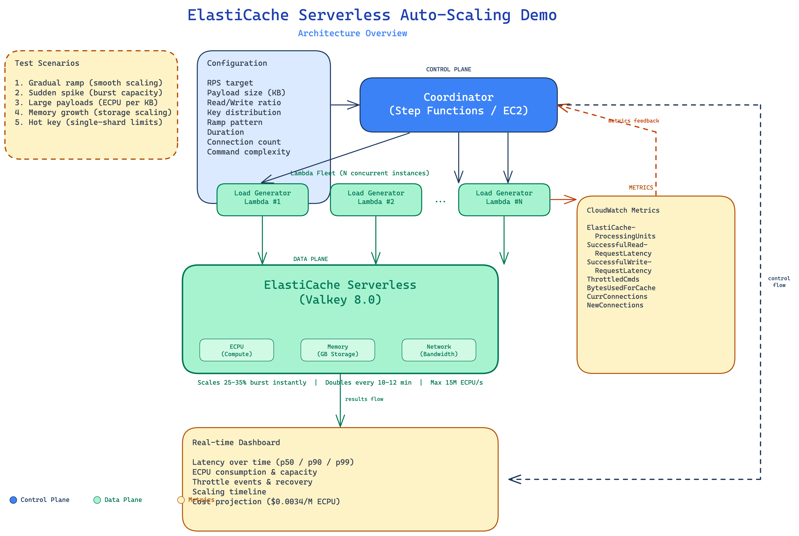

This is a live, interactive load-testing platform that demonstrates ElastiCache Serverless auto-scaling across all three dimensions: ECPU (compute), memory, and network bandwidth.
Customers visit a hosted dashboard, pick a scenario, optionally tweak parameters, and click "Run Scenario". Behind the scenes, a fleet of Lambda functions fires real Valkey commands at a live ElastiCache Serverless cache using the official Valkey GLIDE client. Results are aggregated and rendered as interactive charts, right in the browser.
No CloudFormation templates to deploy. No SSH into EC2. No Redis benchmarking CLI to wrestle with. Just a URL and a button.
The entire system is serverless, deployed via CDK, and runs in a single region (us-east-2). Here's how the pieces fit together:

Customer clicks "Run Scenario" on the dashboard. The browser POSTs to
/api/executions with the scenario name and any config overrides.
CloudFront routes this to API Gateway, which invokes the API Lambda.
API Lambda starts a Step Functions execution. The state machine receives the scenario config, optionally pre-populates keys, then fans out to N Lambda workers using a Map state (up to 200 concurrent).
Lambda fleet hammers ElastiCache Serverless. Each Lambda creates
GlideClusterClient instances (Valkey GLIDE with a Rust core)
and fires GET/SET commands at the configured RPS using async pipelines. Each client uses a single multiplexed
TCP connection per cluster node — no connection pool needed.
ElastiCache Serverless auto-scales transparently. As demand increases, it provides 25-35% burst headroom instantly and doubles capacity every 10-12 minutes under sustained load. The Lambdas track every request's latency in 18-bucket histograms (5-second windows) and count successes, throttles, errors, and bytes.
Aggregator Lambda merges all N worker payloads. It groups snapshots by timestamp, sums scalar metrics, and — critically — merges latency histograms element-wise to compute mathematically correct global p50/p90/p99. (You cannot average percentiles. This is the right way.)
Dashboard renders the results. The browser polls for completion, then renders 6 interactive charts (latency, throughput, ECPU, throttle, memory, connections), 6 KPI cards, and a scaling events timeline — all from real data.
The whole point of Serverless is "don't think about capacity." This demo proves it. Throw 500K RPS at it with zero warning. Watch it handle it. Show that to a customer who's scared to leave provisioned mode.
This isn't a slide deck with made-up graphs. Every data point comes from actual Valkey commands hitting a real ElastiCache Serverless endpoint. Sub-3ms p50 latency at scale. Customers can verify it themselves.
Share the URL. Customer picks a scenario. Customer clicks Run. Customer sees results. No SA involvement needed. No "let me set up a POC environment." The demo IS the POC.
Every test shows the estimated cost in real time. $0.0034 per million ECPU + $0.125/GB-hr storage. Customers see exactly what they'd pay. No surprises. The quick_test costs < $0.001.
ECPU scaling (gradual ramp, sudden spike), memory scaling (write-heavy sequential keys), ECPU-per-KB amplification (large payloads), and single-slot limits (hot key Zipfian). Every edge case in one platform.
The entire infrastructure — VPC, cache, Lambdas, Step Functions, API Gateway, CloudFront,
S3 — is defined in 6 CDK stacks. One cdk deploy --all and you're live.
One cdk destroy --all and it's gone. No pets, no snowflakes.
ElastiCache Serverless Valkey 8.0 Valkey GLIDE (Rust core) AWS Lambda (ARM64) Step Functions API Gateway CloudFront S3 CDK v2 (TypeScript) Python 3.12 Docker (Graviton) Chart.js
Why Valkey GLIDE? It's the official Valkey client with a Rust-powered core.
Each GlideClusterClient uses a single multiplexed TCP connection per cluster node,
pipelining thousands of concurrent commands without a connection pool. This means
50 Lambdas × 3 clients = 150 multiplexed connections can drive 500K+ RPS.
Traditional connection-per-request clients would need thousands of connections for the same throughput.
All metrics are client-side only. No CloudWatch dependency. Each Lambda tracks round-trip latency in an 18-bucket histogram per 5-second window (144 bytes per window). The aggregator merges histograms by element-wise sum and walks the merged histogram for global percentiles. This is the only mathematically correct way to compute p50/p90/p99 across distributed workers.
ElastiCache Serverless charges by ECPU: 1 ECPU = 1 KB transferred.
A 3.2 KB GET costs 3.2 ECPU. The dashboard computes this as
success_count × ceil(payload_bytes / 1024) and shows
cumulative cost per window. The large_payloads scenario (50 KB values) makes this ECPU amplification
viscerally obvious.
Six pre-built scenarios, each designed to stress a specific scaling dimension:
| Scenario | Total RPS | Payload | Duration | Lambdas | What it proves |
|---|---|---|---|---|---|
| Gradual Ramp | 100K | 1 KB | 30 min | 20 | Smooth ECPU scaling under linear load increase |
| Sudden Spike | 500K | 1 KB | 5 min | 50 | Burst capacity & throttle recovery under shock load |
| Large Payloads | 20K | 50 KB | 10 min | 10 | ECPU-per-KB cost amplification with big values |
| Memory Growth | 200K | 10 KB | 15 min | 20 | Storage auto-scaling with 80% writes |
| Hot Key | 240K | 1 KB | 5 min | 30 | Zipfian hot-key pressure on single slot |
| Quick Test | 1K | 1 KB | 1 min | 2 | 60-second smoke test to verify everything works |
Every parameter is tunable from the dashboard: RPS, payload size, read/write ratio, key distribution, ramp pattern, Lambda count, GLIDE client count, inflight command limit, and command type. Customers can build their own scenario by tweaking the config panel.
The entire stack is infrastructure-as-code. Clone the repo, deploy, done:
# Prerequisites: AWS CLI, Node.js 18+, Docker running
git clone <repo> && cd serverless_load_test
cd infra && npm install
npx cdk deploy --all --require-approval never
# That's it. CloudFront URL in the output.
6 CDK stacks deploy in dependency order: VPC → Cache → Storage → Lambda → Step Functions → Website.
Tear down with npx cdk destroy --all.
The demo is live. Click below, pick a scenario, hit Run. See ElastiCache Serverless scale before your eyes.
Launch the Dashboard